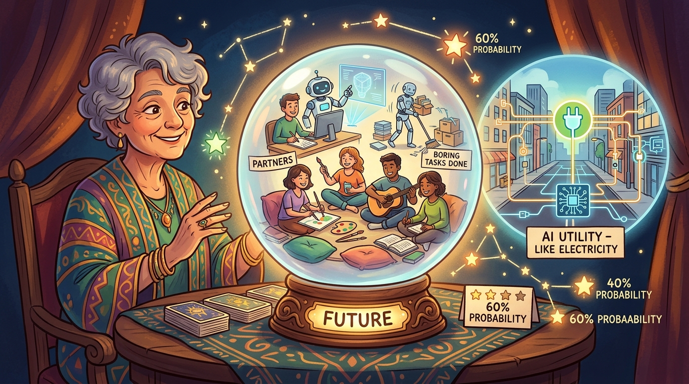

"When models become commodities, value shifts to the things that surround them. The lesson from every commoditizing technology is that positioning matters more than features."
Product Strategy Lead Who Has Seen This Before
The Commoditization Pattern
Technology industries follow a predictable pattern. Early adopters pay premium prices for leading-edge capability. As capability matures, multiple providers deliver similar results, prices fall, and differentiation shifts to factors like reliability, cost, and integration. AI is following this pattern.
Understanding commoditization trends helps you position your product where value accrues rather than where competition intensifies.
Current Commoditization Trends
Foundation Model Commoditization
Foundation models are following the path of cloud infrastructure. Just as compute became a commodity with little differentiation between AWS, Azure, and GCP, foundation models are becoming interchangeable inputs.
Foundation models are following the path of cloud infrastructure. Just as compute became a commodity with little differentiation between AWS, Azure, and GCP, foundation models are becoming interchangeable inputs. Price competition has driven model prices down 90% or more in 18 months with continued falls. Performance convergence means top models from different providers achieve similar benchmarks. API standardization with common interfaces makes provider switching straightforward.
What Commoditizes and What Does Not
Commoditizing: Base model capability, raw inference capacity, standard benchmarks
Resisting commoditization: Domain-specific fine-tuning, prompt engineering expertise, eval frameworks, integration depth, reliability guarantees

Capability Convergence
Key AI capabilities that seemed differentiating two years ago are becoming baseline expectations:
Key AI capabilities that seemed differentiating two years ago are becoming baseline expectations. Text generation is now table stakes where specialized applications need domain optimization. Image generation with diffusion models is accessible and differentiation comes through control and consistency. Code assistance has multiple strong options where integration and workflow matter more than raw capability. Voice and speech has commodity transcription where synthesis quality differentiates.
Strategic Implications
Commoditization changes where to compete:
Where Value Shifts
Commoditization changes where to compete. Where value shifts includes domain depth where generic AI becomes free and domain-optimized AI commands premium, integration value where work that requires AI increases rather than decreases the value of surrounding systems, reliability and safety where production-grade AI that works when needed is more valuable than capability that sometimes fails, and data advantages where models trained on proprietary data maintain differentiation longer.
Positioning for Commoditization
If you compete on base model capability, commoditization erodes your position. Position around factors that resist commoditization. Move up the stack by competing on application layer rather than model layer. Own the interface by controlling the user interaction point that surrounds the model. Build data moats by developing proprietary training or evaluation data. Specialize deeply by going narrow before going broad.
Practical Example: EduGen Positioning
Who: EduGen competing in AI-assisted education
Situation: Foundation model providers were commoditizing general language capabilities
Problem: How to position against well-funded competitors with generic AI advantages?
Strategy: Doubled down on education-specific capabilities: curriculum standards integration, age-appropriate content filtering, pedagogical pattern recognition, teacher workflow integration. These required deep domain knowledge that generic AI providers did not have.
Result: Despite larger competitors with more general AI capability, EduGen maintained differentiated position in K-12 education market. School districts cited domain expertise as primary selection factor.
Lesson: Generic AI commoditizes; domain depth does not. Find the domain-specific work that makes your AI more valuable than generic alternatives.
Trajectory Through 2026-2028
Model commoditization will continue and accelerate:
Model commoditization will continue and accelerate. In 2026, foundation model prices approach marginal cost and standard benchmarks become unreliable differentiators, with value shifting definitively to application and integration layers. In 2027, open source models match proprietary performance for most use cases and deployment complexity becomes a differentiator, where reliability and cost optimization matter more than raw capability. In 2028, commoditization reaches a plateau where remaining differentiation comes from data, domain depth, and integration, and AI-native products become table stakes.
Implication for Product Strategy
If you are building a product that relies primarily on base model capability, you are building on borrowed time. The window for that advantage is narrowing. Invest in positioning that survives commoditization: domain expertise, data advantages, integration depth, or distribution.